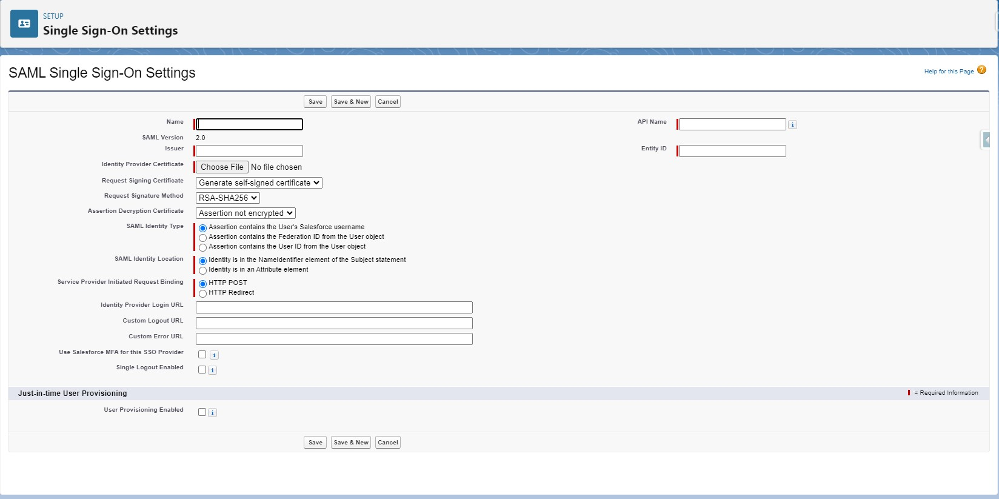
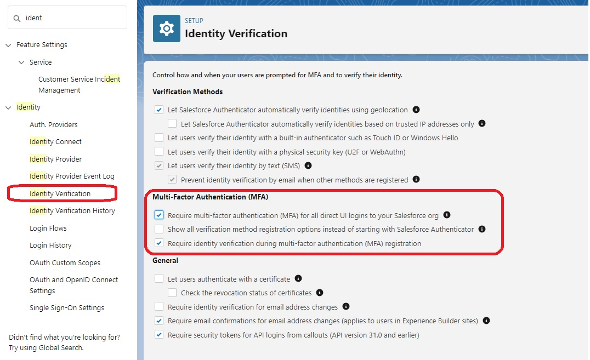
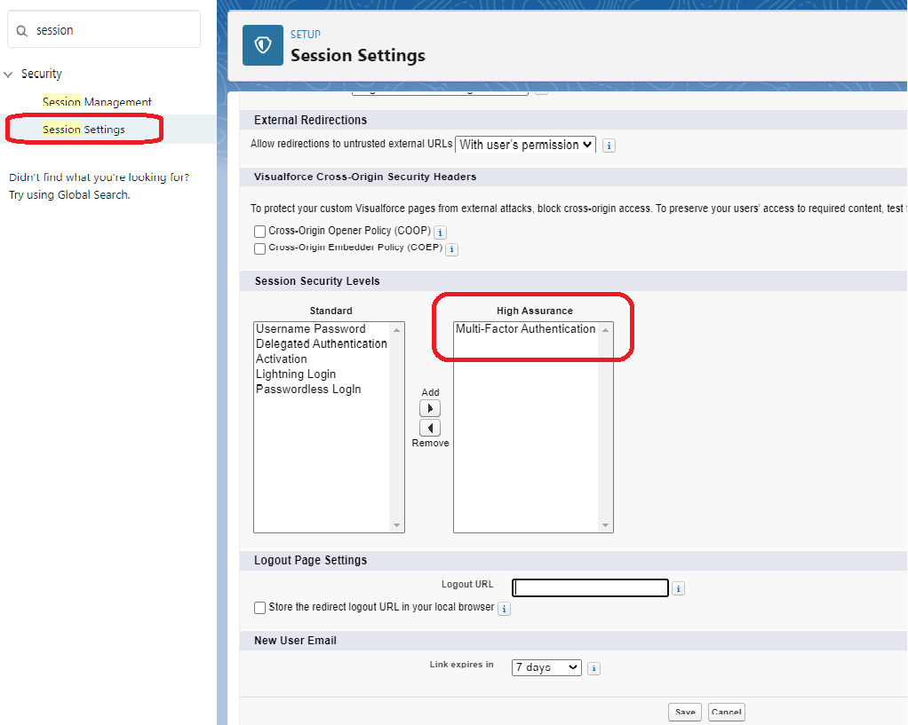
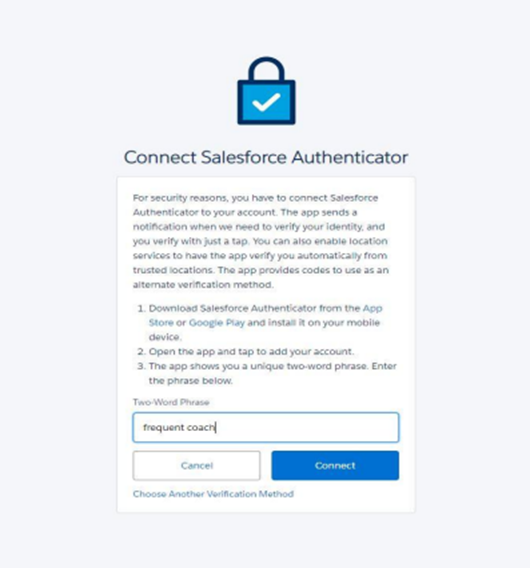

Authentication
Authentication in Salesforce
1. What do you mean by authentication in salesforce?
- Authentication in Salesforce refers to the process of verifying the identity of a user or application attempting to access the Salesforce platform.
- It involves confirming that the user or application is who they claim to be before granting them access to Salesforce data or functionality.
- Salesforce provides several authentication options, including Username and Password, Single Sign-On (SSO), and two-factor authentication (2FA) among others.
- These options allow organizations to choose the most appropriate authentication method based on their security requirements, user needs, and compliance regulations.
- Once a user or application is authenticated, they can access Salesforce data and functionality based on the permissions and access levels granted to them by the Salesforce administrator. This helps ensure that sensitive data and resources within Salesforce are protected from unauthorized access or misuse.
2. Can you explain the different authentication options available in Salesforce?
There are several authentication options available in Salesforce, including:
- Username and Password: This is the most basic form of authentication, where users enter their Salesforce username and password to log in.
- Single Sign-On (SSO): SSO allows users to authenticate once with an identity provider (such as Okta or Active Directory) and then access multiple applications, including Salesforce, without having to log in again.
- Two-Factor Authentication (2FA): This adds an extra layer of security by requiring users to enter a verification code in addition to their username and password.
- IP Address Restrictions: (From Setup -> Network Access)This option allows administrators to restrict access to Salesforce based on specific IP addresses or ranges.
- Federated Authentication: This option allows users to authenticate with external identity providers, such as Google or Facebook, using OAuth or SAML.
3. Difference between authentication and authorization in salesforce ?
- Authentication and authorization are two different concepts in Salesforce, although they are often used together to ensure secure access to Salesforce data and functionality.
- Authentication is the process of verifying the identity of a user or application attempting to access Salesforce. It involves confirming that the user or application is who they claim to be before granting them access to Salesforce data or functionality. Authentication ensures that only authorized users or applications can access Salesforce, which helps protect against unauthorized access or data breaches.
- Authorization, on the other hand, refers to the process of granting access to specific data or functionality within Salesforce. Once a user or application is authenticated, they must be authorized to access certain parts of Salesforce based on their assigned permissions and access levels. Authorization ensures that users or applications only have access to the data and functionality they need to perform their job duties, while keeping sensitive information protected.
- In summary, authentication verifies the identity of a user or application, while authorization determines what specific data and functionality that user or application is authorized to access within Salesforce. Authorization, on the other hand, is the process of determining what a user is allowed to do once they have been authenticated.
Example of Authorization :
An example of authorization in Salesforce is assigning different levels of access to users or groups based on their job roles, responsibilities, and the data they need to access. Here's an example:
Let's say a company has a Salesforce org where they store customer data. The org has several different types of users, such as sales reps, customer service agents, and managers. The sales reps need access to view and edit their own accounts and opportunities, while customer service agents need access to view and update customer cases. Managers need access to view reports and dashboards on the performance of their team.
Single-Sign On (SSO) Setup:
From Setup -> Single-Sign On Setting -> New
Entity ID: Enter your My Domain URL, which is displayed on your org's My Domain Setup page. Make sure that entity ID includes "https" and references the Salesforce domain.
It should look something like this: https://mydomain-dev-ed.my.salesforce.com.
Issuer: It is an Security Assertion Markup Language (SAML) identity provider like Axiom, Okta, OneLogin, Ping Identity etc. (EX. of SSO Tool).
Identity Provider Certificate: It will be provided by the issuer.
NOTE: We can use “Assertion contains the User ID from the User object” instead of “Assertion contains the Federation ID from the User object”.
Federation ID: We can create from the User detail page.
Two Factor Authentication Setup (2FA)
STEP - 1 From set-up goto “Identify Verification”. Enable “Require multi-factor authentication (MFA) for all direct UI logins to your Salesforce org” then click on SAVE.
STEP - 2 From set-up goto “Session Setting”, and make sure that “Multi Factor Authentication - MFA” should be on the box.
STEP - 3 In Mobile, download the “Salesforce Authenticator” app from the app store and click on “Add Account”, it will give a “Two Word Phrase”
STEP - 4 Now login to your SFDC account, here it will ask for that “Two Word Phrase” which you got from previous steps (STEP - 3). Then your SFDC account will be connected with the Mobile app.
From next time whenever you try to login your SFDC account, it will notify you in your salesforce mobile app and ask for “Approve” or “Deny”.
IMPORTANT NOTE - If you’re disconnecting an account to switch to a new device, follow the steps to back up your Connected Accounts before proceeding.
1. Begin in a web browser, in your Salesforce account. From your personal settings, in the Quick Find box, enter Advanced User Details, then select Advanced User Details. No results? In the Quick Find box, enter Personal Information, then select Personal Information.
2. Find App Registration: Salesforce Authenticator, and click Disconnect.
3. Open the Salesforce Authenticator app on your mobile device.
4. In the app list of Connected Accounts, find the account you want to remove.
5. Swipe left on the account username.
6. Tap Remove or Delete, whichever appears.
A confirmation dialog appears.
7. To confirm the removal of the account, tap Remove. If Salesforce Authenticator was your only MFA verification method, you’re prompted to register another method the next time you log in to Salesforce.
OR we can do simply - From set-up go to “Identify Verification”. Disable “Require multi-factor authentication (MFA) for all direct UI logins to your Salesforce org” then click on SAVE